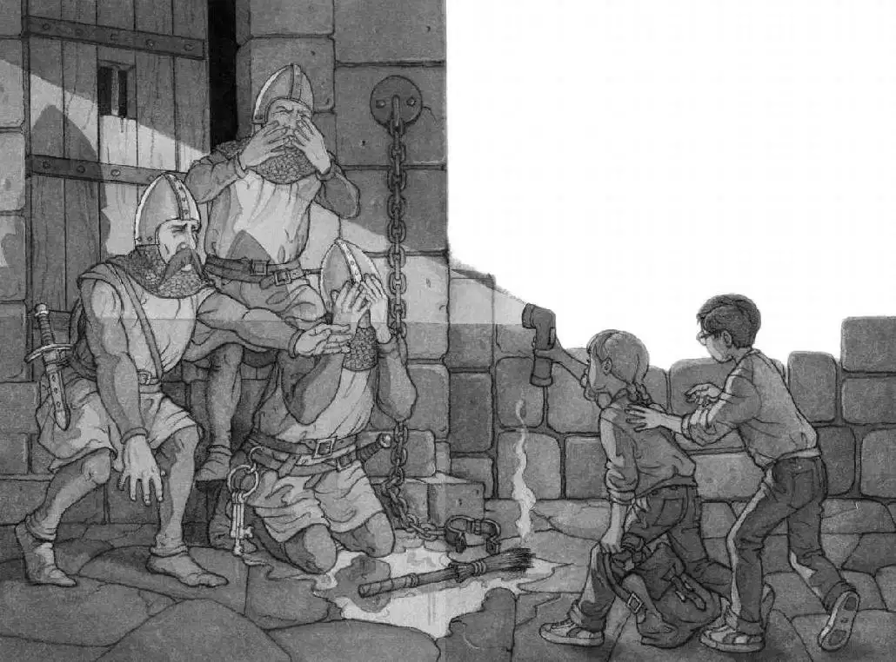

In the torchlight, Jack saw three huge men standing over him.
One with very squinty eyes held the torch. One with a very red face held Jack. And one with a very long mustache held on to Annie.
Annie was kicking and yelling.
“Stop!” said the one with the very long mustache.
“Who art thou?” said the one with the very red face.
“Spies? Foreigners? Egyptians? Romans? Persians?” said the squinty-eyed one.
“No, you dummies!” said Annie.
“Oh, brother,” Jack muttered.
“Arrest them!” said Red Face.
“The dungeon!” said Squinty Eyes.
The guards marched Jack and Annie out of the armory.
“Go!” said a guard, giving him a push.
Jack went.
Squinty, Annie, Mustache, Jack, and Red marched down the long, dark hallway. They marched down a narrow, winding staircase.
Jack heard Annie shouting at the guards. “Meanies! We didn’t do anything!”
The guards laughed.
At the bottom of the stairs was a big iron door with a bar across it. Squinty lifted the bar. He shoved the door, and it creaked open.
Mustache and Red pushed Jack and Annie into a cold, clammy room.
The fiery torch lit the dungeon. There were chains hanging from the filthy walls. Water dripped from the ceiling, making puddles on the stone floor. It was the creepiest place Jack had ever seen.
“We’ll keep them here till the feast is done. Then turn them over to the duke,” said Squinty. “He knows how to take care of thieves.”
“There will be a hanging tomorrow,” said Mustache.
“If the rats don’t get them first,” said Red.
They all laughed.
Jack felt his backpack move. Annie was quietly opening it.
“Come on, let’s chain the two of ’em,” said Squinty.
The guards started toward Jack and Annie. Annie whipped her flashlight out of Jack’s pack.
“Ta-da!” she yelled.
The guards froze. They stared at the shiny flashlight in Annie’s hand.
Annie switched on the light. The guards gasped. They jumped back against the wall.
Squinty dropped the torch. It fell into a dirty puddle on the floor, sputtered, and went out.
“My magic wand!” Annie said, waving the flashlight. “Get down. Or I’ll wipe you out!”
Jack’s mouth dropped open.
Annie fiercely pointed her light at Squinty, then at Mustache, and then at Red. Each howled and covered his face.
“Down! All of you! Get down!” shouted Annie.
One by one, the guards knelt down on the wet floor.
Jack couldn’t believe it.
“Come on,” Annie whispered to Jack. “Let’s go now.”

Jack looked at the open doorway. He looked at the guards quaking on the ground.
“Hurry!” said Annie.
In one quick leap, Jack followed Annie out of the terrible dungeon.